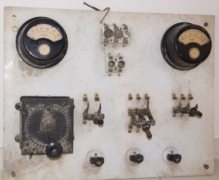

Quadro elettrico

Scuola di provenienza: , Avellino
Settore: Elettricità
Costruttori: CGS Milano, Monza, Italia
Materiali: Marmo. Bachelite, ottone, rame, vetro, legno, ferro
Accessori: Amperometro(85970), voltmetro(187308), reostato (RD 25 – 1784), tre interruttori, portalampade, salvavita
Stato di conservazione: Molto sporco di calcinacci e polvere. Un interruttore è rotto, così come i contatti elettrici.
Descrizione: Quadro elettrico di inizio ‘900 probabilmente staccato dalla vecchia sede del Liceo Colletta (Convitto) e trasportato nella soffitta dell’attuale Liceo.